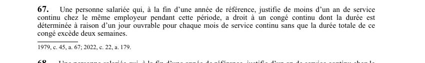

art-67-LNT : vacances annuelles
Un article du wiki ⚖️ Recueil législatif
En bref
Article qui combine deux droits : 3 semaines de congé (au lieu de 2) et 6 % d'indemnité. Ce droit vise la personne salariée.
- S'applique à tout salarié ayant **3 ans.
- Durée minimale : 3 semaines de congé annuel continues.
- Taux : 6 % du salaire brut durant l'année de référence.
- Les 3 semaines doivent être prises de façon continue, sauf entente contraire avec l'employeur.
🌐 LegisQuébec · 📄 PDF officiel (page 24)
Texte officiel : capture du PDF
{kind=link}

Toucher l'image pour l'agrandir🔗 Ouvrir a cette page : LNT.pdf : page 24 · texte a jour au 26 mars 2024
Voir aussi
- art-55-LNT : majoration des heures supplémentaires · faculté : tout travail effectué au-delà de la semaine normale de travail donne droit à une majoration de 50 % du salaire horaire habituel (heures supplémentaires).
- art-66-LNT : jours fériés · article fondamental sur le taux d'indemnité de vacances de 4 % pour les salariés cumulant moins de 3 ans de service continu.
- art-68-LNT : indemnité vacances · article qui garantit le paiement de l'indemnité de vacances en cas de cessation d'emploi avant la prise du congé.
- ↑ Loi : LNT
Pages qui pointent ici (4)
- art-66-LNT : jours fériés Recueil législatif
- art-68-LNT : indemnité vacances Recueil législatif
- LNT Recueil législatif
- LNT : Chapitre IV : Repos et vacances Recueil législatif